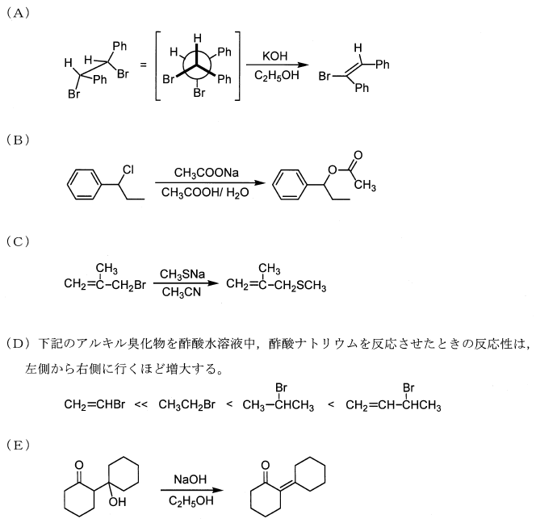

令和4年度 問6 有機化学及び燃料
次の（A）～（E）の求核置換と脱離反応について、反応機構を正しく評価している組合せはどれか。

| 選択肢 | A | B | C | D | E | |
|---|---|---|---|---|---|---|
|
①
|
E2脱離 | SN1反応 | SN2反応 | SN1反応 | E1cB反応 | |
|
②
|
E2脱離 | SN2反応 | SN1反応 | SN2反応 | E1脱離 | |
|
③
|
E1脱離 | SN1反応 | SN1反応 | SN2反応 | E1cB反応 | |
|
④
|
E1cB反応 | SN1反応 | SN2反応 | SN1反応 | E1脱離 | |
|
⑤
|
E2脱離 | SN2反応 | SN2反応 | SN1反応 | E1cB反応 | |
正答
① A：E2脱離、B：S N 1反応、C：S N 2反応、D：S N 1反応、E：E1cB反応
求核置換反応及び脱離反応は大きく2種類ずつに分類できます。
- 求核置換反応
- SN1反応：まず基質からカルボカチオン中間体が生成し、次に求核剤が攻撃する2段階反応、3級炭素ほど反応しやすい
- SN2反応：求核剤の攻撃と脱離基の脱離が同時に起こり、1級炭素ほど反応しやすい
- 脱離反応
- E1脱離：まず脱離基が脱離してカルボカチオン中間体が生成し、次に弱塩基によってプロトンが引き抜かれてアルケンが生成
- E1cB反応：まず強塩基によってα水素が引き抜かれ、カルボアニオン中間体が生成し、次に脱離基が脱離してアルケンが生成
- E2脱離：プロトンの引き抜きと脱離基の脱離が同時に起こり、1級炭素ほど反応しやすい
脱離反応のうち、先にプロトンが引き抜かれ、その後脱離基が外れる場合をE1cB脱離と呼びます。”CB” は “conjugatebase”（共役塩基）を意味し、塩基がプロトンを引き抜くことで始まる脱離反応です。
- E1cB反応：カルボアニオン中間体を経由
- E1反応：カルボカチオン中間体を経由
(C)は1級炭素で立体障害が少ないためSN2反応で進行します。対して(B)は2級炭素であり芳香環による立体障害のためSN1反応で進行します。
(D)は1級炭素よりも2級炭素の方が反応性が高いことからSN1反応で進行します。CH2=CHBrが特に反応性が低いのは、ビニル基に直接結合しているためπ電子と求核剤との反発によるものです。CH2=CHCHBrCH3が特に反応性が高いのは、カルボカチオン中間体をビニル基のπ電子が安定化するためです。π電子をもつ場合、脱離基の位置によって求核反応の起こりやすさが大きく変わります。
(A)は脱離する水素原子と臭素原子の位置関係（二面角）が180度であることから、アンチ脱離（トランス脱離）が起きています。アンチ脱離に有利なE2脱離で進行します。
(E)は強塩基存在下でカルボニルのα, β炭素にて脱離していることからE1cB反応です。